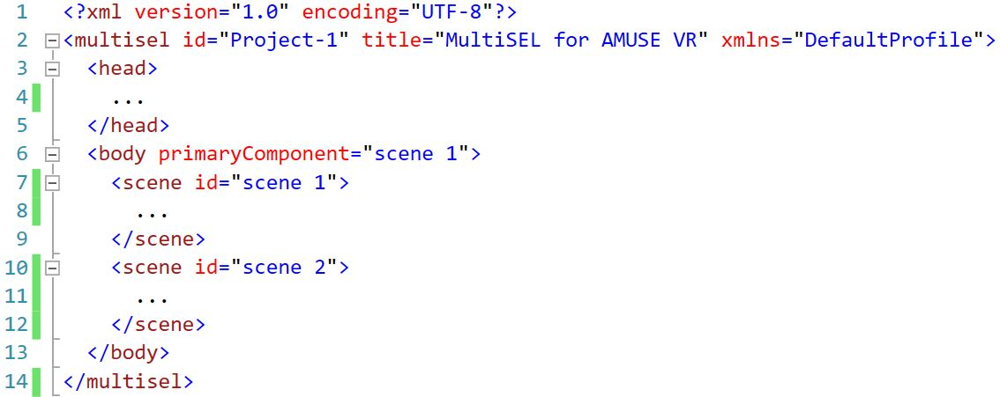

A imagem abaixo mostra de forma resumida como é o esqueleto de um documento MultiSEL.
Na linha 1, temos o cabeçalho de um documento XML.
Na linha 2 com fim na linha 14, temos a abertura e fechamento da tag (marcação) do documento MultiSEL.
Na linha 3 com fim na linha 5, temos a tag head que no MultiSEL é opcional, possuindo uma função somente informativa.
Na linha 6 com fim na linha 13, temos a tag body. A tag body é a tag principal do documento, responsável por especificar as cenas (scenes) e alguns relacionamentos do projeto.
Na linha 6, ainda na tag body, temos o atributo primaryComponent que indica a cena "scene 1", que será a cena que iniciará a aplicação.
Na linha 7 com fim na linha 9, temos um exemplo da tag scene, que especifiará todas as mídias, efeitos sensoriais e alguns relacionamentos referentes a esta cena.
Na linha 7, ainda na tag scene, temos o atributo primaryComponent que indica a mídia "video360_s1", que será a mídia que iniciará a cena.